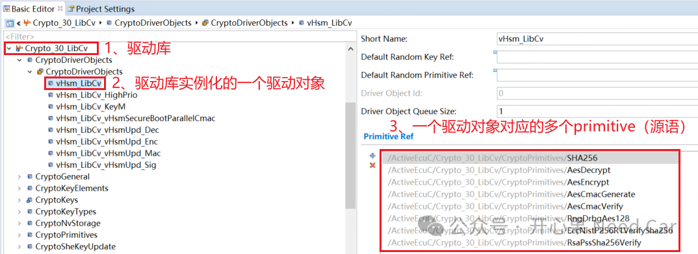
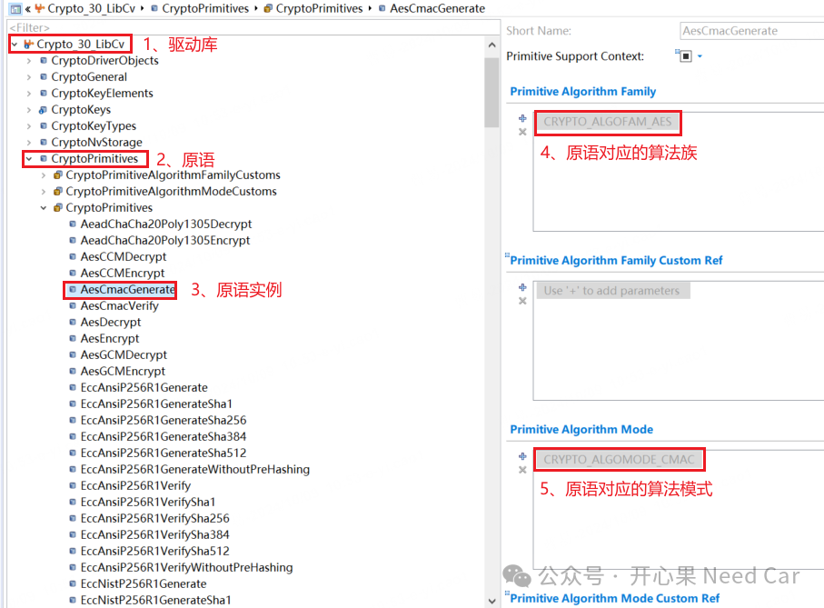
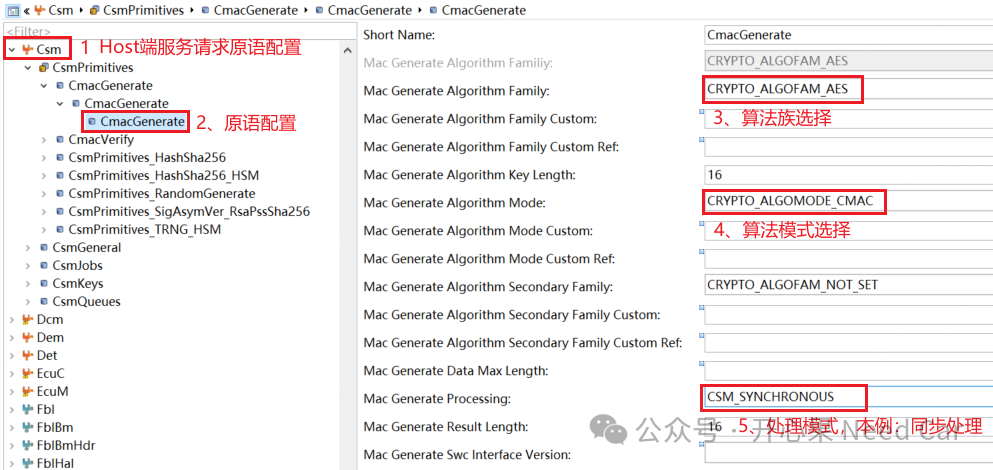
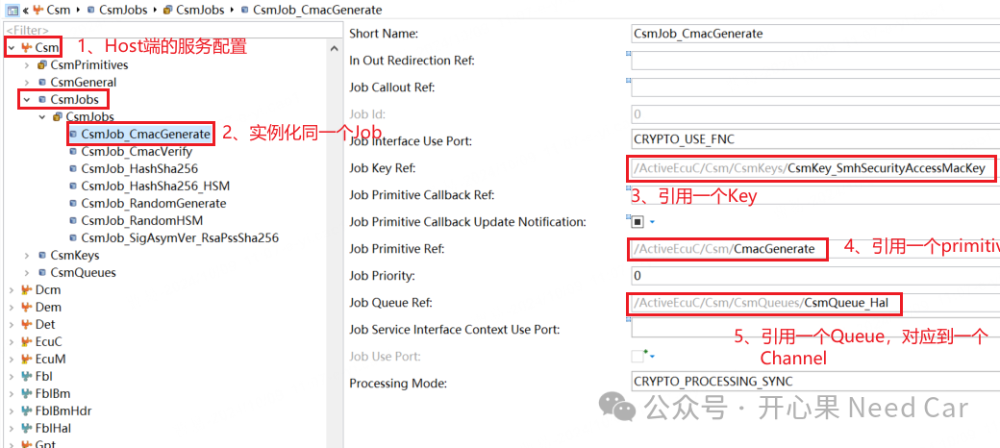
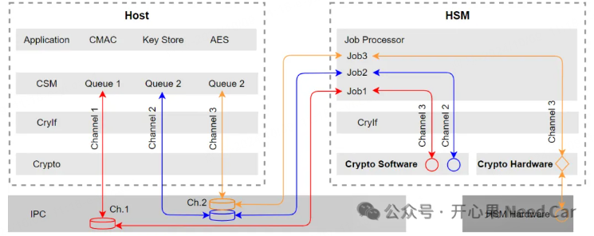
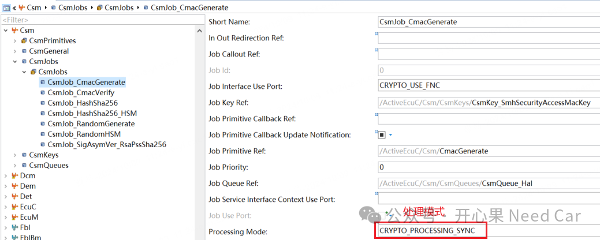
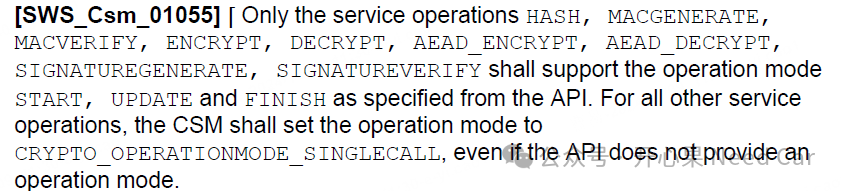
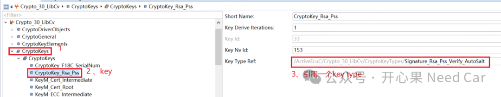
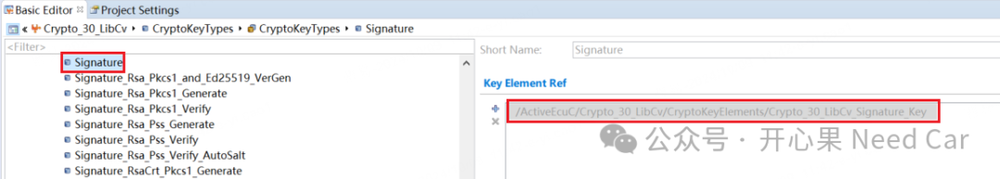
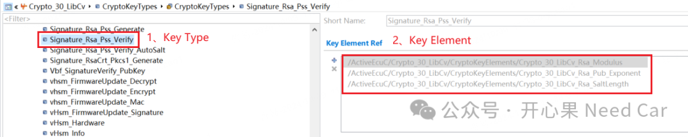

如果想按照CP Autosar的软件架构理解透彻信息安全，那么，理解基本概念是第一步。本文讨论一下信息安全的基础概念，以便于更好的开发或者认识信息安全。
1、基本概念
(一)Crypto Driver Object，加密驱动对象加密驱动程序可以实现一个或多个加密驱动程序对象。加密驱动对象可以在硬件或软件中提供不同的加密原语（Primitive）。一个Crypto Driver的加密驱动对象彼此独立。每个加密驱动对象只有一个工作空间(即同时只能执行一个加密原语)。- Crypto Driver（加密驱动程序）：加密的本质是通过特定的数学算法将原始数据转换成不可直接解析的密文。而在实现这个数学算法的过程中，即可以通过软件的方式实现，也可以通过硬件的方式，也就是将数学运算硬件化。所以，加密驱动库也就有了软件加密驱动库（eg：mbedtls，遵循Apache 2.0开源许可协议，可以商用）和硬件加密驱动库两种方式。
实际的项目开发中，对应的硬件驱动库和软件驱动库如下所示：“加密驱动程序可以实现一个或多个加密驱动程序对象”，这句话如何理解？即：驱动库可以实例化（instance）多个加密驱动对象，一个驱动对象可以包含多个驱动原语（primitive），如下所示：
(二)Primitive，原语
原语（Primitive）是在加密驱动程序对象（Crypto Driver Object）中实现的已配置加密算法的实例。其中，它指的是CSM（Crypto Service Manager）为应用程序提供的功能，它包括“算法族”（algorithm family）和“算法模式”（algorithm mode）。
“算法族”（algorithm family），eg：AES, MD5, RSA，
“算法模式”（algorithm mode），eg：ECB, CBC等。
HSM端原语配置实例如下：

注意，Host端使用到的服务，对应的原语要和HSM端匹配，示意如下：

Job一般指CSM模块对应的CsmJob，而且每个CsmJob需要引用一个Key、一个Primitive和一个Channel。如果Host端要使用一个服务，除了在HSM端配置对应的服务以外，Host端需要配置CsmJob，CsmJob示意如下：
Channel就是一个路径（Path），即：从CSM开始，通过CryIf，直到对应的Crypto Driver Object。Channel示意如下：

每个服务会对应一个处理模式，异步（Asynchronous）处理或者同步（Synchronous）处理。
Asynchronous：Host请求的服务并不立即处理，而是在稍后的调度函数中处理，处理的结果一般由callback function通知到服务发起方。Synchronous：Host请求的服务立即处理，函数返回时，处理结果一并获取。
（六）Operation，操作模式
在Autosar的软件架构中，一个服务请求，可以包含多种模式（START、UPDATE、FINISH），说白了就是设计一个状态机，对服务分阶段处理。当然，实际使用中也可以使用CRYPTO_OPERATIONMODE_SINGLECALL模式，一次性完成三个状态处理。关于哪些服务可以使用什么模式请求，可以参考Autosar规范，如下所示：

ret = Csm_MacGenerate(CsmConf_CsmJob_CsmJob_CmacGenerate, \ CRYPTO_OPERATIONMODE_SINGLECALL,\ &cmacData[0], CMAC_KEY_LEN, cmacInfo, CMAC_KEY_LEN)
2、Key
讨论信息安全，Key的比重很大。只有Key安全了，密码学才能发挥它应用的作用。在Autosar软件架构中，每个CSM Job都需要引用一个Key，而且Key具有Key Type和Key Element。
（二）、每个Key Type可以引用一个或者多个Key Element
- 1个Key Type引用一个Key Element

- 1个Key Type引用多个Key Element
举例：RSA2048使用的公钥需要模数（modulus）、指数（exponent）及随机数（salt）三个element，示意如下：